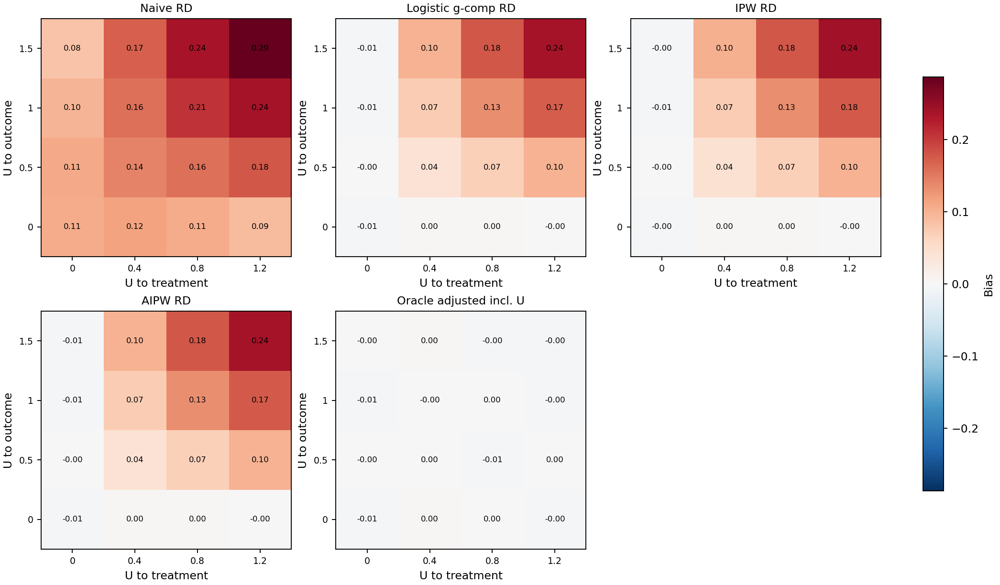

Bias Heatmap
This is not a proof of robustness. It is a controlled simulation sensitivity study showing how unmeasured-confounding strength changes estimator bias under a known DGP.

Grid Summary
Bias is measured against the known marginal risk difference. MCSE of bias is available in the detailed estimator table.
| U to treatment | U to outcome | Known RD | Naive bias | G-comp bias | IPW bias | AIPW bias | Oracle bias | Positivity |
|---|---|---|---|---|---|---|---|---|
| 0.000 | 0.000 | 0.169 | 0.108 | -0.006 | -0.004 | -0.007 | -0.006 | False |
| 0.000 | 0.500 | 0.163 | 0.110 | -0.000 | -0.000 | -0.001 | -0.000 | False |
| 0.000 | 1.000 | 0.148 | 0.097 | -0.005 | -0.006 | -0.006 | -0.006 | False |
| 0.000 | 1.500 | 0.131 | 0.083 | -0.005 | -0.004 | -0.006 | -0.001 | False |
| 0.400 | 0.000 | 0.169 | 0.116 | 0.003 | 0.004 | 0.004 | 0.004 | False |
| 0.400 | 0.500 | 0.163 | 0.143 | 0.042 | 0.043 | 0.042 | 0.001 | False |
| 0.400 | 1.000 | 0.148 | 0.159 | 0.072 | 0.072 | 0.072 | -0.000 | False |
| 0.400 | 1.500 | 0.130 | 0.171 | 0.099 | 0.102 | 0.100 | 0.003 | False |
| 0.800 | 0.000 | 0.169 | 0.107 | 0.003 | 0.003 | 0.003 | 0.002 | True |
| 0.800 | 0.500 | 0.163 | 0.159 | 0.069 | 0.069 | 0.068 | -0.006 | True |
| 0.800 | 1.000 | 0.147 | 0.208 | 0.134 | 0.133 | 0.133 | 0.001 | True |
| 0.800 | 1.500 | 0.130 | 0.237 | 0.178 | 0.177 | 0.178 | -0.003 | True |
| 1.200 | 0.000 | 0.169 | 0.092 | -0.002 | -0.000 | -0.002 | -0.003 | True |
| 1.200 | 0.500 | 0.163 | 0.179 | 0.099 | 0.099 | 0.099 | 0.001 | True |
| 1.200 | 1.000 | 0.148 | 0.238 | 0.175 | 0.175 | 0.175 | -0.003 | True |
| 1.200 | 1.500 | 0.131 | 0.287 | 0.239 | 0.240 | 0.240 | -0.003 | True |
Estimator Detail
| U to treatment | U to outcome | Estimator | Bias | MCSE bias | RMSE | Coverage | Failure rate |
|---|---|---|---|---|---|---|---|
| 0.0 | 0.0 | Naive RD | 0.108 | 0.003 | 0.111 | 0.013 | 0.000 |
| 0.0 | 0.0 | Logistic g-comp RD | -0.006 | 0.003 | 0.029 | 0.062 | 0.000 |
| 0.0 | 0.0 | IPW RD | -0.004 | 0.003 | 0.029 | 1.000 | 0.000 |
| 0.0 | 0.0 | AIPW RD | -0.007 | 0.003 | 0.030 | 0.988 | 0.000 |
| 0.0 | 0.0 | Oracle adjusted incl. U | -0.006 | 0.003 | 0.029 | 0.062 | 0.000 |
| 0.0 | 0.5 | Naive RD | 0.110 | 0.004 | 0.114 | 0.062 | 0.000 |
| 0.0 | 0.5 | Logistic g-comp RD | -0.000 | 0.004 | 0.033 | 0.000 | 0.000 |
| 0.0 | 0.5 | IPW RD | -0.000 | 0.004 | 0.036 | 0.988 | 0.000 |
| 0.0 | 0.5 | AIPW RD | -0.001 | 0.004 | 0.033 | 0.963 | 0.000 |
| 0.0 | 0.5 | Oracle adjusted incl. U | -0.000 | 0.004 | 0.033 | 0.050 | 0.000 |
| 0.0 | 1.0 | Naive RD | 0.097 | 0.003 | 0.102 | 0.150 | 0.000 |
| 0.0 | 1.0 | Logistic g-comp RD | -0.005 | 0.004 | 0.034 | 0.013 | 0.000 |
| 0.0 | 1.0 | IPW RD | -0.006 | 0.004 | 0.034 | 1.000 | 0.000 |
| 0.0 | 1.0 | AIPW RD | -0.006 | 0.004 | 0.034 | 0.963 | 0.000 |
| 0.0 | 1.0 | Oracle adjusted incl. U | -0.006 | 0.003 | 0.031 | 0.062 | 0.000 |
| 0.0 | 1.5 | Naive RD | 0.083 | 0.003 | 0.088 | 0.175 | 0.000 |
| 0.0 | 1.5 | Logistic g-comp RD | -0.005 | 0.003 | 0.030 | 0.025 | 0.000 |
| 0.0 | 1.5 | IPW RD | -0.004 | 0.004 | 0.033 | 1.000 | 0.000 |
| 0.0 | 1.5 | AIPW RD | -0.006 | 0.003 | 0.031 | 0.963 | 0.000 |
| 0.0 | 1.5 | Oracle adjusted incl. U | -0.001 | 0.003 | 0.024 | 0.100 | 0.000 |
| 0.4 | 0.0 | Naive RD | 0.116 | 0.003 | 0.119 | 0.037 | 0.000 |
| 0.4 | 0.0 | Logistic g-comp RD | 0.003 | 0.004 | 0.032 | 0.037 | 0.000 |
| 0.4 | 0.0 | IPW RD | 0.004 | 0.004 | 0.033 | 1.000 | 0.000 |
| 0.4 | 0.0 | AIPW RD | 0.004 | 0.004 | 0.034 | 0.938 | 0.000 |
| 0.4 | 0.0 | Oracle adjusted incl. U | 0.004 | 0.004 | 0.032 | 0.062 | 0.000 |
| 0.4 | 0.5 | Naive RD | 0.143 | 0.003 | 0.146 | 0.000 | 0.000 |
| 0.4 | 0.5 | Logistic g-comp RD | 0.042 | 0.004 | 0.054 | 0.025 | 0.000 |
| 0.4 | 0.5 | IPW RD | 0.043 | 0.004 | 0.055 | 0.900 | 0.000 |
| 0.4 | 0.5 | AIPW RD | 0.042 | 0.004 | 0.055 | 0.713 | 0.000 |
| 0.4 | 0.5 | Oracle adjusted incl. U | 0.001 | 0.004 | 0.035 | 0.037 | 0.000 |
| 0.4 | 1.0 | Naive RD | 0.159 | 0.004 | 0.162 | 0.000 | 0.000 |
| 0.4 | 1.0 | Logistic g-comp RD | 0.072 | 0.003 | 0.077 | 0.000 | 0.000 |
| 0.4 | 1.0 | IPW RD | 0.072 | 0.003 | 0.078 | 0.662 | 0.000 |
| 0.4 | 1.0 | AIPW RD | 0.072 | 0.003 | 0.078 | 0.425 | 0.000 |
| 0.4 | 1.0 | Oracle adjusted incl. U | -0.000 | 0.003 | 0.028 | 0.075 | 0.000 |
| 0.4 | 1.5 | Naive RD | 0.171 | 0.004 | 0.174 | 0.000 | 0.000 |
| 0.4 | 1.5 | Logistic g-comp RD | 0.099 | 0.004 | 0.105 | 0.000 | 0.000 |
| 0.4 | 1.5 | IPW RD | 0.102 | 0.004 | 0.109 | 0.375 | 0.000 |
| 0.4 | 1.5 | AIPW RD | 0.100 | 0.004 | 0.107 | 0.188 | 0.000 |
| 0.4 | 1.5 | Oracle adjusted incl. U | 0.003 | 0.003 | 0.031 | 0.087 | 0.000 |
| 0.8 | 0.0 | Naive RD | 0.107 | 0.003 | 0.111 | 0.075 | 0.000 |
| 0.8 | 0.0 | Logistic g-comp RD | 0.003 | 0.003 | 0.030 | 0.075 | 0.000 |
| 0.8 | 0.0 | IPW RD | 0.003 | 0.003 | 0.029 | 1.000 | 0.000 |
| 0.8 | 0.0 | AIPW RD | 0.003 | 0.003 | 0.031 | 0.975 | 0.000 |
| 0.8 | 0.0 | Oracle adjusted incl. U | 0.002 | 0.003 | 0.029 | 0.037 | 0.000 |
| 0.8 | 0.5 | Naive RD | 0.159 | 0.003 | 0.161 | 0.000 | 0.000 |
| 0.8 | 0.5 | Logistic g-comp RD | 0.069 | 0.003 | 0.075 | 0.013 | 0.000 |
| 0.8 | 0.5 | IPW RD | 0.069 | 0.004 | 0.076 | 0.713 | 0.000 |
| 0.8 | 0.5 | AIPW RD | 0.068 | 0.004 | 0.075 | 0.425 | 0.000 |
| 0.8 | 0.5 | Oracle adjusted incl. U | -0.006 | 0.004 | 0.034 | 0.025 | 0.000 |
| 0.8 | 1.0 | Naive RD | 0.208 | 0.003 | 0.210 | 0.000 | 0.000 |
| 0.8 | 1.0 | Logistic g-comp RD | 0.134 | 0.004 | 0.138 | 0.000 | 0.000 |
| 0.8 | 1.0 | IPW RD | 0.133 | 0.004 | 0.137 | 0.013 | 0.000 |
| 0.8 | 1.0 | AIPW RD | 0.133 | 0.004 | 0.137 | 0.000 | 0.000 |
| 0.8 | 1.0 | Oracle adjusted incl. U | 0.001 | 0.004 | 0.033 | 0.050 | 0.000 |
| 0.8 | 1.5 | Naive RD | 0.237 | 0.003 | 0.239 | 0.000 | 0.000 |
| 0.8 | 1.5 | Logistic g-comp RD | 0.178 | 0.004 | 0.180 | 0.000 | 0.000 |
| 0.8 | 1.5 | IPW RD | 0.177 | 0.004 | 0.180 | 0.000 | 0.000 |
| 0.8 | 1.5 | AIPW RD | 0.178 | 0.004 | 0.181 | 0.000 | 0.000 |
| 0.8 | 1.5 | Oracle adjusted incl. U | -0.003 | 0.003 | 0.029 | 0.087 | 0.000 |
| 1.2 | 0.0 | Naive RD | 0.092 | 0.004 | 0.097 | 0.175 | 0.000 |
| 1.2 | 0.0 | Logistic g-comp RD | -0.002 | 0.004 | 0.032 | 0.037 | 0.000 |
| 1.2 | 0.0 | IPW RD | -0.000 | 0.004 | 0.033 | 1.000 | 0.000 |
| 1.2 | 0.0 | AIPW RD | -0.002 | 0.004 | 0.032 | 0.950 | 0.000 |
| 1.2 | 0.0 | Oracle adjusted incl. U | -0.003 | 0.004 | 0.034 | 0.062 | 0.000 |
| 1.2 | 0.5 | Naive RD | 0.179 | 0.003 | 0.181 | 0.000 | 0.000 |
| 1.2 | 0.5 | Logistic g-comp RD | 0.099 | 0.004 | 0.104 | 0.000 | 0.000 |
| 1.2 | 0.5 | IPW RD | 0.099 | 0.004 | 0.105 | 0.338 | 0.000 |
| 1.2 | 0.5 | AIPW RD | 0.099 | 0.004 | 0.105 | 0.113 | 0.000 |
| 1.2 | 0.5 | Oracle adjusted incl. U | 0.001 | 0.004 | 0.035 | 0.062 | 0.000 |
| 1.2 | 1.0 | Naive RD | 0.238 | 0.003 | 0.239 | 0.000 | 0.000 |
| 1.2 | 1.0 | Logistic g-comp RD | 0.175 | 0.003 | 0.177 | 0.000 | 0.000 |
| 1.2 | 1.0 | IPW RD | 0.175 | 0.003 | 0.178 | 0.000 | 0.000 |
| 1.2 | 1.0 | AIPW RD | 0.175 | 0.003 | 0.177 | 0.000 | 0.000 |
| 1.2 | 1.0 | Oracle adjusted incl. U | -0.003 | 0.003 | 0.031 | 0.013 | 0.000 |
| 1.2 | 1.5 | Naive RD | 0.287 | 0.003 | 0.288 | 0.000 | 0.000 |
| 1.2 | 1.5 | Logistic g-comp RD | 0.239 | 0.003 | 0.241 | 0.000 | 0.000 |
| 1.2 | 1.5 | IPW RD | 0.240 | 0.003 | 0.242 | 0.000 | 0.000 |
| 1.2 | 1.5 | AIPW RD | 0.240 | 0.003 | 0.242 | 0.000 | 0.000 |
| 1.2 | 1.5 | Oracle adjusted incl. U | -0.003 | 0.003 | 0.030 | 0.125 | 0.000 |
Artifacts
sensitivity_summary.csv and sensitivity_grid.csv
dgpforge sensitivity --config examples/unmeasured_confounding_sensitivity.yaml --out examples/generated_reports/unmeasured_confounding_sensitivity